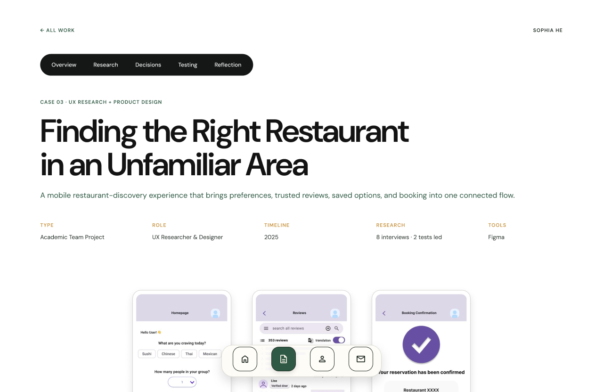
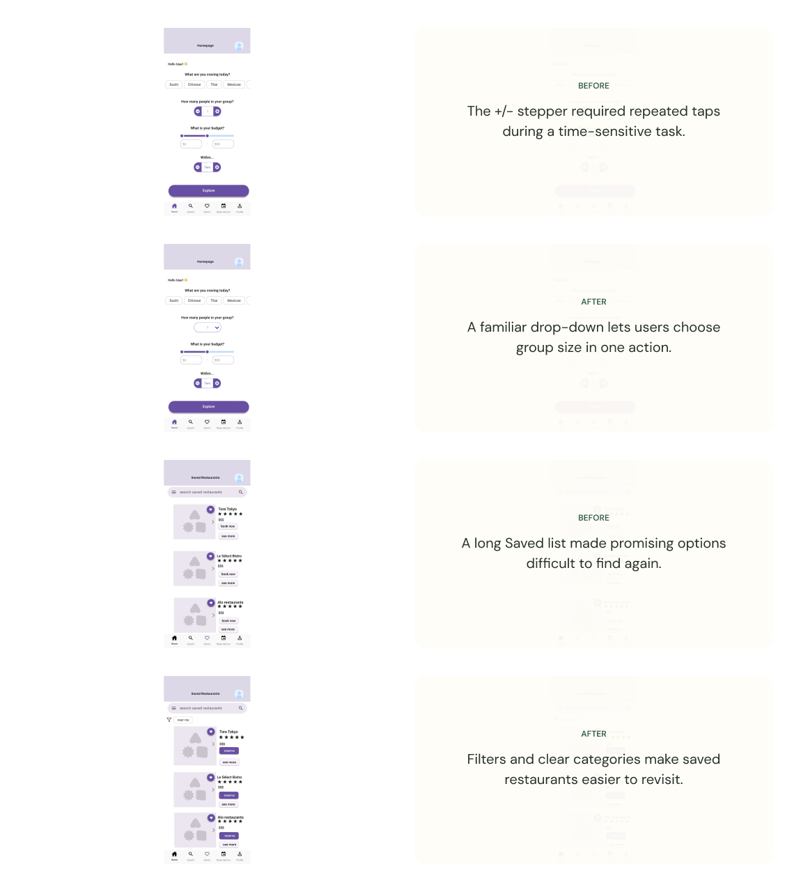

CASE 03 · PRODUCT DESIGN
Finding the Right Restaurant
Helping travelers move from scattered information to a confident choice.

Overview
The project explores how travelers can compare restaurants and make a decision without being overwhelmed by scattered information.
Explore the interaction
Choose a step below to explore the corresponding screen or interaction state. On desktop, you can also use the arrow controls to move through the sequence.
Prototype walkthrough
Explore the states from the original Figma prototype.

01 · INTERACTION BEFORE
Hover over the comparison to inspect the original interaction state.
1 / 4
Reflection
This page is an interactive web adaptation of the portfolio prototype. The controls recreate the key exploration pattern while keeping the project content readable on desktop and mobile.
← Back to selected projects